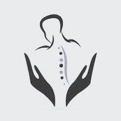

Servicio de Neonatologia
Clínica del Sol nació bajo el concepto de ser “especialistas en maternidad e infancia” .
Con la incorporacion de tecnología de alta gama en cada especialidad logran trabajo responsable y en equipo.
Los especialista en neonatología trabajan primordialmente en las salas de cuidados especiales o en las unidades de cuidados intensivos para recién nacidos
La especialidad de neonatología es una rama de la pediatría que se dedica al cuidado del recién nacido sano como al diagnóstico y tratamiento del neonato enfermo. Se relaciona directamente con la obstetricia por su dedicación al cuidado del binomio madre hijo e incluye un alto contenido de puericultura enlazado a aspectos tecnológicos de alta sofisticación, lo que implica que el médico neonatólogo debe saber lograr el adecuado equilibrio como parte de su arte.
La neonatología fue reconocida como especialidad médica en 1960 y previamente fueron sus pioneros los que iniciaron el legado del que hoy disponemos. Este artículo pretende ilustrar someramente la historia de la neonatología desde sus albores, detallar algunos hitos del desarrollo nacional y finalizar dando un enfoque sobre los horizontes del presente y futuro de la especialidad. Se destaca la bibliografía seleccionada cuyos artículos originales nos remontan a la rica historia de la medicina y sus pioneros.
Especialidades medicas para estudios complementarios:
Tenemos el compromiso con vos y tu familia, por eso cuidamos la salud de nuestros pacientes con un staff de profesionales altamente capacitados y con equipamientos con la ultima tecnología.
Laboratorio
Diagnostico por imagen
Kinesiologia respirato

Fisioterapia
Contactos
Solicita tu turno ingresando a nuestro mail o llamando al siguiente teléfono de lunes a viernes de 8 a 20hs.
Optimizá tu tiempo en nuestra institucion. Al finalizar tu consulta gestióná tus turnos para prácticas médicas complementarias o nuevas consultas ese mismo día.
Whatsapp 351-5788123
clinicadelsol@gmail.com